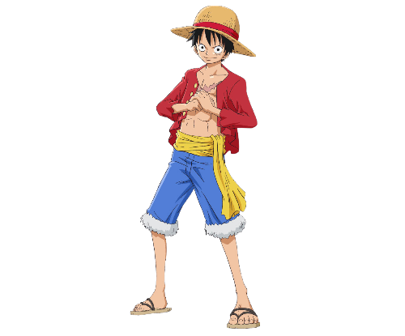
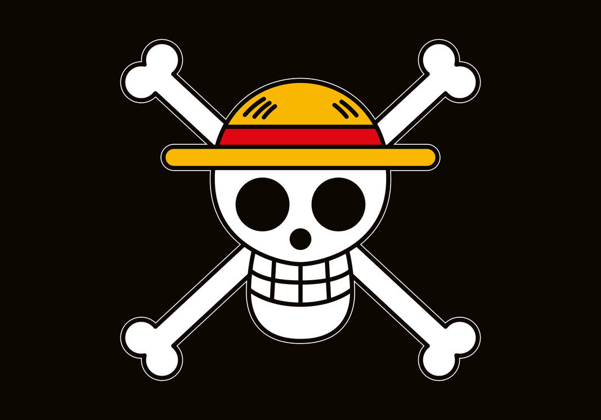

Monkey D. Luffy
Chapéu de PalhaMonkey D. Luffy, também conhecido como "Luffy do Chapéu de Palha" e comumente como "Chapéu de Palha", é o fundador e capitão dos cada vez mais infames e poderosos Piratas do Chapéu de Palha, bem como o mais poderoso de seus melhores lutadores.
Ele deseja encontrar o tesouro lendário deixado para trás pelo falecido Gol D. Roger e assim se tornar o Rei dos Piratas.
Nascido na Vila Foosha, Luffy acidentalmente comeu a Gomu Gomu no Mi aos 7 anos de idade, que deu ao seu corpo propriedades de borracha. Nesta época, Luffy conheceu Shanks, "o Ruivo", que lhe deu seu chapéu de palha como parte de uma promessa para que eles se encontrassem novamente.
Luffy é o filho do líder Revolucionário Monkey D. Dragon, neto paterno do herói da Marinha Monkey D. Garp, irmão jurado do falecido "Punhos de Fogo" Portgas D. Ace e do chefe de gabinete Revolucionário Sabo, e filho adotivo de Curly Dadan. Ele é uma das poucas pessoas no mundo que carregam a Vontade de D.
"Eu sou Monkey D. Luffy e vou ser o Rei dos Piratas!"
- Local de origem: East Blue
- Residência: Vila Foosha
- Aniversário: 5 de Maio
- Tipo Sanguíneo: F
- Primeira aparição: Capítulo 1; Episódio 1
- Estado: Vivo
Luffy enfrentou inúmeras forças globais que encontrou, começando contra os piratas mais poderosos do East Blue e avançando para confrontos contra a Marinha, os Shichibukai, a Cipher Pol, Nobres Mundiais e até mesmo os Yonkou, emergindo vitorioso na maior parte destes confrontos.
Ele invadiu e indiretamente causou a destruição de Enies Lobby, escapou e causou uma fuga em massa em Impel Down, e foi uma figura central na Guerra de Marineford. Ele derrotou ou fez amizade com sete dos onze antigos Shichibukai, antes da dissolução da organização, e invadiu o território de dois Yonkou. As realizações e a herança familiar de Luffy fizeram com que ele fosse rotulado como um "Futuro Elemento Perigoso", enquanto ganhava a reputação de ser "imprudente" e, em alguns casos, "insano", ganhando a ira do Almirante da Frota Sakazuki, do Quartel-General da Marinha e até mesmo do Governo Mundial.